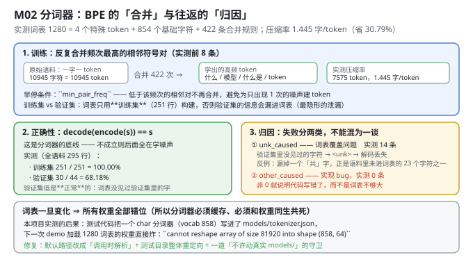
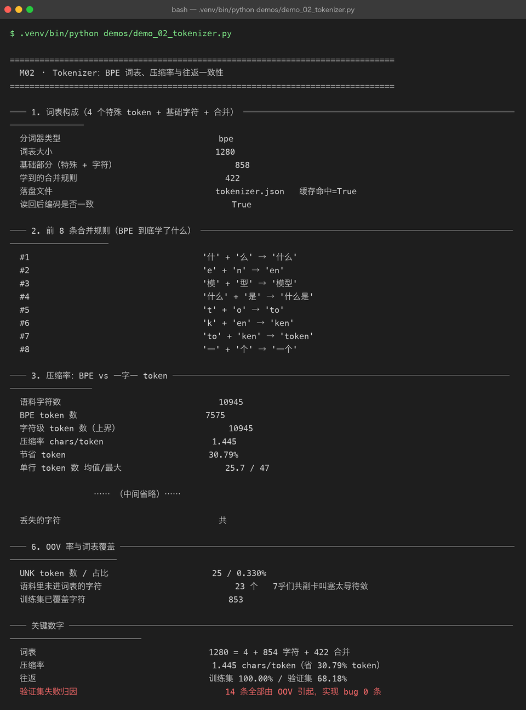

Milestone 02 — Tokenizer：BPE 的「合并」，以及往返失败的「归因」
M01 定了语料规模（10,651 字符 / 876 个不同字符），也定了词表大小 1280。这一章回答两个问题：
- BPE 到底把什么合成了新 token？ —— 直接打印前 8 条合并规则，而不是"信任算法"。
- 往返失败是词表不够大，还是代码写错了？ —— 这是本章最有价值的一处设计：失败必须能归因。
1. Why：为什么「往返一致性」是分词器的底线
decode(encode(s)) == s。如果它不成立，后面所有训练都是在学噪声 —— 因为模型看到的文本已经被改变了，而你浑然不觉。
但只报一个"通过率 68%"是没有信息量的：它既可能是词表没覆盖验证集里某个生僻字（正常），也可能是代码把两个不同的字塌缩成了同一个 id（严重 bug）。两者的处理方式完全相反，所以必须分开报。
2. Design：先切分、再训词表；失败按原因分类
顺序不可颠倒：clean → split → build_tokenizer(train_lines)。用验证集一起训词表等于把验证集的信息泄漏进模型，这是最隐蔽的泄漏（P06 也踩过）。
归因规则（tok.roundtrip_report）：
missing = {ch for ch in line if ch not in vocab} # 这一行里词表没有的字符
caused_by_unk = bool(missing) and all(ch not in recovered for ch in missing)unk_caused—— 词表覆盖问题。可度量、可接受（要么把字符补进词表，要么承认它就该被unk）。other_caused—— 实现 bug，必须为 0。非 0 就说明代码错了，而不是词表不够大。
BPE 早停：min_pair_freq 控制"低于该频次的相邻符号对不再合并"。不设这个门槛，算法会为只出现 1 次的拼写噪声专门建一个 token —— 那个 token 永远不会被正确使用。

3. Real-run evidence（来自 demos/out/demo_02_tokenizer_terminal.txt）

3.1 词表构成
分词器类型 bpe
词表大小 1280
基础部分（特殊 + 字符） 858
学到的合并规则 422
落盘文件 tokenizer.json 缓存命中=True
读回后编码是否一致 True3.2 前 8 条合并规则：BPE 到底学了什么
#1 '什' + '么' → '什么'
#2 'e' + 'n' → 'en'
#3 '模' + '型' → '模型'
#4 '什么' + '是' → '什么是'
#5 't' + 'o' → 'to'
#6 'k' + 'en' → 'ken'
#7 'to' + 'ken' → 'token'
#8 '一' + '个' → '一个'这 8 行比任何解释都清楚：BPE 先黏出汉字词（什么 / 模型 / 什么是 / 一个），再黏出英文子词（en → ken → token）。所以中文语料上它同时是"词级"和"子词级"的。
3.3 压缩率：BPE 存在的意义
语料字符数 10945
BPE token 数 7575
字符级 token 数（上界） 10945
压缩率 chars/token 1.445
节省 token 30.79%
单行 token 数 均值/最大 25.7 / 473.4 切词示例：模型"眼里"的文本
原文 问：什么是 KV Cache？答：KV Cache 缓存已算过的 K 和 V。
token 数 26
pieces = 问 | ： | 什么是 | | KV | | Cache | ？ | 答 | ： | KV | | Cache | |
缓存 | 已 | 算 | 过 | 的 | | K | | 和 | | V | 。注意 什么是 是一个 token、KV 和 Cache 各是一个 token、空格是独立 token。模型看到的不是"字"，而是这些统计上高频的块。
3.5 往返一致性：训练集 100%，验证集的失败全部有归因
训练集行数 / 成功 251 / 251
训练集通过率 100.00%
验证集行数 / 成功 44 / 30
验证集通过率 68.18%
失败归因：OOV 导致 14
失败归因：其它 0 ← 必须为 0
全部失败都能用 OOV 解释 True
反例原文 训练 BPE 时统计的是相邻符号对的共现频次，合并规则按顺序回放即可复现分词结果
反例还原 训练 BPE 时统计的是相邻符号对的现频次，合并规则按顺序回放即可复现分词结果。
丢失的字符 共这一节是本章的核心：29 个失败（14 条验证集行）全部由 OOV 引起，other_caused = 0。所以"验证集只有 68% 往返"不是 bug，而是信息：它精确告出"验证集里有几个字你从来没教过模型"。
3.6 OOV 率与覆盖
UNK token 数 / 占比 25 / 0.330%
语料里未进词表的字符 23 个 7乎们共副卡叫塞太导待敛
训练集已覆盖字符 853这 23 个字符就是"验证集往返失败"的全部原因，而且它们只出现在训练集之外 —— 这正是"先用训练集训词表"的正确代价。
4. 踩坑与反直觉发现
- 词表一旦变化 ⇒ 所有权重全部错位。 这不是理论风险，本项目真实踩到：测试代码把 char 分词器（vocab 858）写进了
models/tokenizer.json，下一次 demo 加载 1280 词表的权重直接炸：
ValueError: cannot reshape array of size 81920 into shape (858, 64)根因是 ensure_tokenizer(cfg, texts, path=TOKENIZER_JSON) 的默认参数在 def 时就绑定好了，测试里 monkeypatch.setattr(tok, "TOKENIZER_JSON", ...) 对它完全无效；而且 tests/conftest.py 的 tmp_models_dir 只重定向了 tok.TOKENIZER_JSON，漏了 pipeline.TOKENIZER_JSON（这个名字在两个模块里各有一份）。修复是三件事一起做：默认路径改成调用时解析 + 逐条登记 (模块, 常量名) + 加一道"整轮测试不许动真实 models/"的守卫。
- 压缩率不是越高越好。 词表越大压缩率越高，但 OOV 越少 × 词表越大 = 参数越多。M04 会算出：词表相关的参数占 71.1%。词表大小是参数预算与压缩率的权衡，不是单调优化目标。
roundtrip_report只返回前 5 条反例，但要给出失败总数与归因计数。否则一个小 bug 会淹没在几百条样例里，或者反过来，你会以为"只有 5 条失败"。
5. Conclusion
- 词表 1280 = 4 个特殊 token + 854 个基础字符 + 422 条合并规则；压缩率 1.445 字/token，省 30.79% token。
- 训练集往返 251 / 251 = 100.00%；验证集 30 / 44 = 68.18%，其中 14 条全部由 OOV 引起、实现 bug 0 条。
- 归因机制让"68% 通过率"从"看起来有 bug"变成"可解释的覆盖率事实"。
- 语料里有 23 个字符没进词表，于是 UNK 占 0.330%，并直接造成那 14 条验证集往返失败 —— 这就是验证集指标的上限来源之一。
- 真实踩坑：分词器缓存被测试污染会以
cannot reshape的形式在别的章节爆出来。缓存路径必须可被测试重定向，并且要有一道守卫。
6. Code map
| 文件 | 职责 |
|---|---|
src/tiny/tok.py | build_tokenizer / save_tokenizer / load_tokenizer / ensure_tokenizer（缓存）/ roundtrip_report（带归因）/ tokenizer_stats / oov_chars |
src/tiny/data.py | clean_lines / split_lines（供"先切分再训词表"使用） |
demos/demo_02_tokenizer.py | 6 节：词表构成 / 前 8 条合并 / 压缩率 / 切词示例 / 往返与归因 / OOV 覆盖 |
demos/out/demo_02_tokenizer_terminal.txt | 本章所有数字的来源 |
assets/tokenizer.svg | BPE 合并 + 往返归因图（含真实缓存污染事故） |
assets/term-02-tokenizer.png | 真实运行截图 |
7. Version line
v0.1 → v0.2，分词器落地并完成归因化验证。实测：词表 1280（4 + 854 字符 + 422 合并）；压缩率 1.445 字/token（省 30.79% token）；训练集往返 100.00%、验证集 68.18%，14 条失败全部由 OOV 解释、实现 bug 0 条；UNK 率 0.330%。并定位并修复"测试污染 models/tokenizer.json"导致的跨章节 cannot reshape 事故。配图 1 张手写 SVG + 1 张真实终端截图。